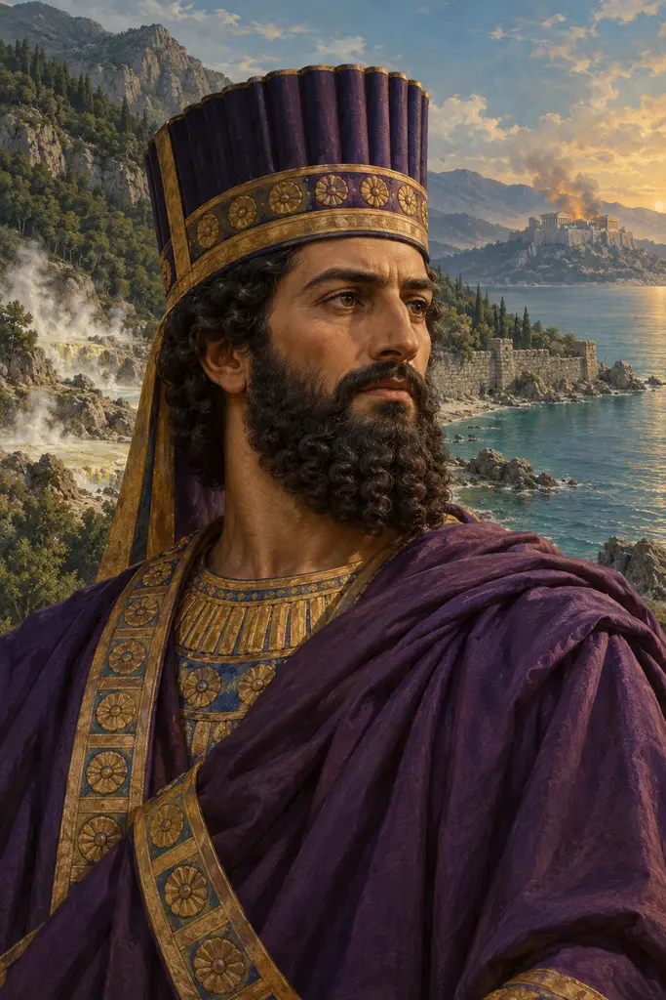
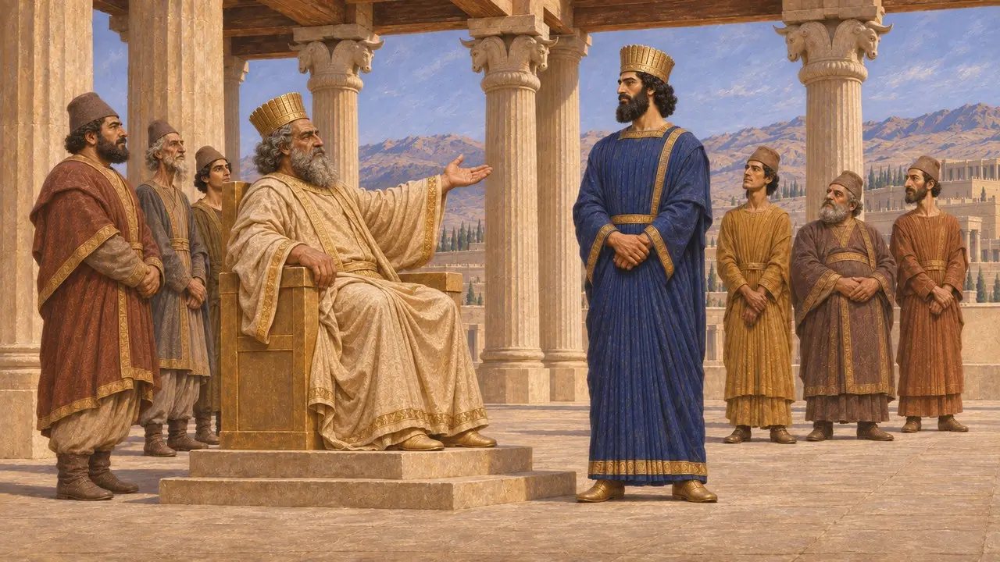
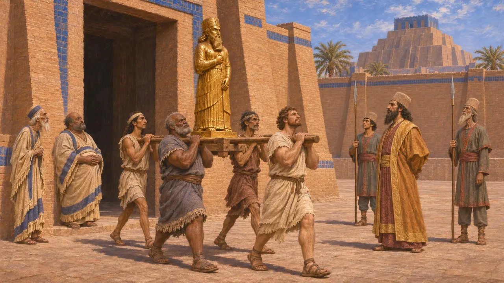
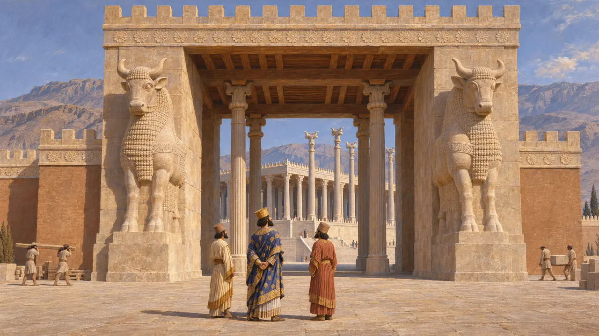
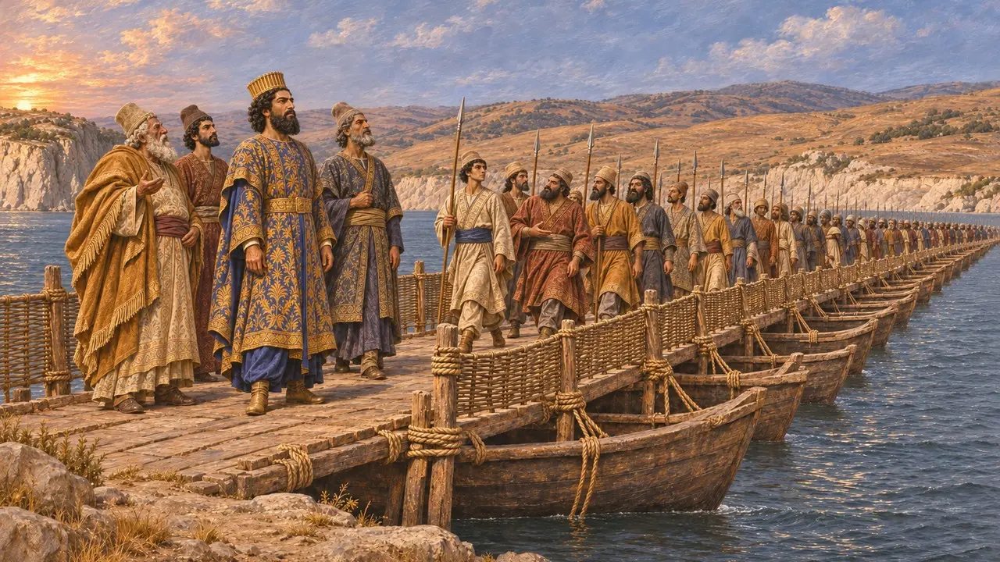
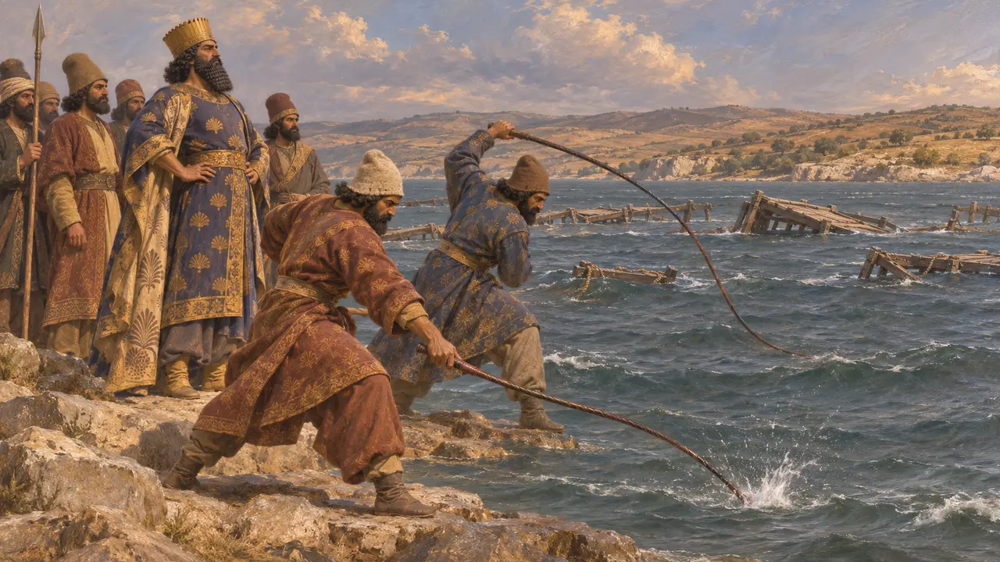

薛西斯（古波斯语作赫沙亚尔沙）是大流士与阿托莎之子，自公元前486年起统治帝国，直至公元前465年死于一场宫廷阴谋。他平定了埃及和巴比伦尼亚的叛乱，完成并扩建了波斯波利斯的宫殿，并于公元前480年率军入侵希腊，攻陷雅典，却在萨拉米斯遭遇失败。希腊作家把他塑造成王者傲慢的典型，而他自己的铭文则呈现出一位虔敬的国王，继承着父亲的事业。
游戏中： 游戏的编年史注释依据希罗多德第7至9卷概述了他的统治：埃及叛乱、阿托斯运河、赫勒斯滂浮桥、公元前480年攻占雅典，以及萨拉米斯之战后回国。注释略去了巴比伦的叛乱。

大流士钦定的继承人
见于史载在波斯波利斯的一篇铭文（XPf）中，薛西斯声称，大流士另有儿子，但承阿胡拉马兹达之意，立他为仅次于自己的至尊者。同一篇铭文将他的世系经大流士、希斯塔斯普上溯至阿尔沙美斯。大流士于公元前486年末去世，此后不久，巴比伦文书便开始以薛西斯的在位年份纪年。
XPf

埃及与巴比伦尼亚的叛乱
争夺中希罗多德（7.7）记载，薛西斯镇压了大流士在位时爆发的埃及叛乱，并任命其兄弟阿契美尼斯为总督。巴比伦泥板记载了两位叛王——贝勒-希曼尼与沙马什-埃里巴，时间大约在公元前484年，此后若干家族档案戛然而止。希罗多德（1.183）称薛西斯从贝勒圣所取走了一尊黄金神像，后来阿里安更声称他摧毁了那里的神庙。史学家怀疑曾有全面的破坏，对他的报复措施至今仍有争论。
Herodotus 7.7, 1.183; Arrian, Anabasis 7.17; C. Waerzeggers, The Babylonian Revolts against Xerxes and the End of Archives, 2003/2004

波斯波利斯的营建者
见于史载在波斯波利斯，薛西斯完成了其父开工的阿帕达纳宫，修建了铭文（XPa）中所称的万国之门，并增建了自己的宫殿。他在XPh铭文中说，曾有一地崇拜代瓦；他凭阿胡拉马兹达的恩宠摧毁了它们的圣所，禁止对它们的崇拜，并在那里崇拜阿胡拉马兹达。铭文没有点明是哪一地，学者们对其所指何事——乃至是否确有其事——也莫衷一是。
XPa; XPh; E. Schmidt, Persepolis I, 1953

入侵希腊
古代记述希罗多德记载，薛西斯下令在阿托斯半岛后方开凿运河，又在赫勒斯滂架设浮桥，随后于公元前480年穿越色雷斯进军。温泉关之战后，他的大军攻占雅典，焚毁了卫城。他的舰队在萨拉米斯战败后，他返回亚洲，将马多尼乌斯留在希腊。希罗多德（7.186）称其大军总数超过五百万，史家普遍认为这一数字被大大夸大了。
Herodotus 7.22-24, 7.33-36, 7.186, 8.53, 8.97-120

鞭笞赫勒斯滂
后世传说希罗多德（7.35）记载，风暴摧毁第一批桥梁后，薛西斯下令鞭笞海峡三百下，并将监工斩首。埃斯库罗斯于公元前472年在雅典上演的《波斯人》，描绘了一位因骄横而遭众神惩戒的国王。这类情节服务于希腊人关于傲慢的道德训诫，并无任何波斯史料可以印证。
Herodotus 7.35; Aeschylus, Persians
来源
- Herodotus, Histories, books 7-9
- Xerxes' inscriptions XPa, XPf, XPh
- P. Briant, From Cyrus to Alexander, 2002
- A. Kuhrt, The Persian Empire: A Corpus of Sources from the Achaemenid Period, 2007
- C. Waerzeggers, The Babylonian Revolts against Xerxes and the End of Archives, 2003/2004
- Aeschylus, Persians